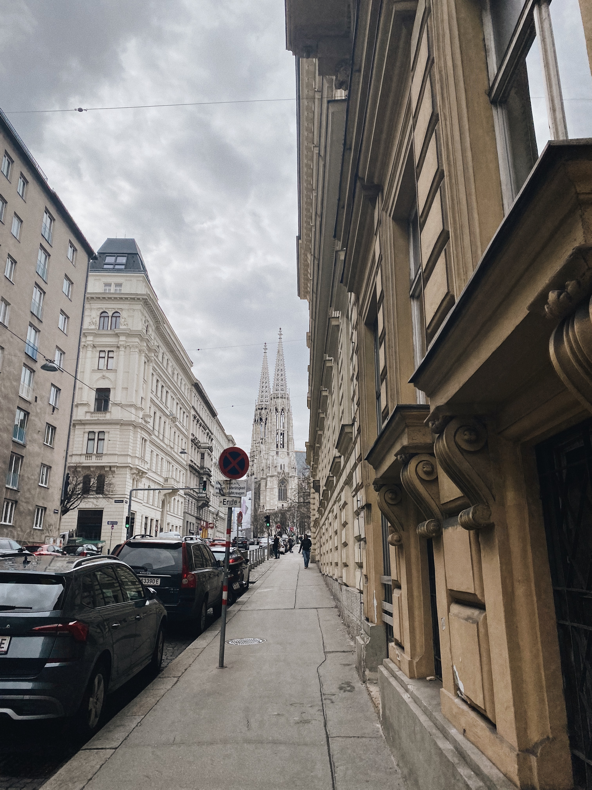
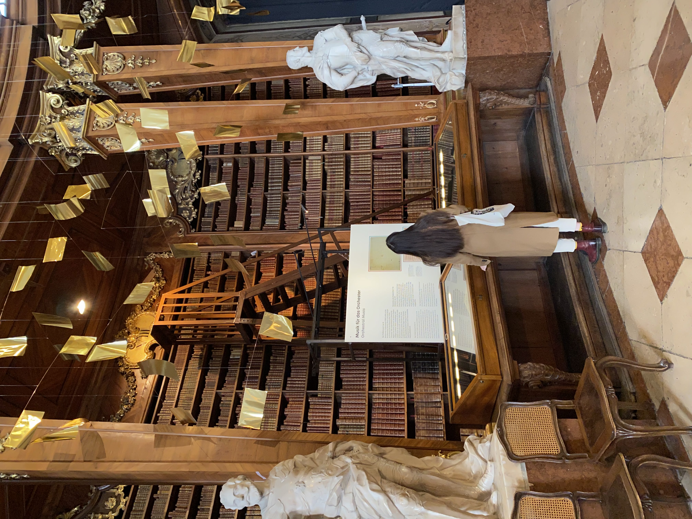
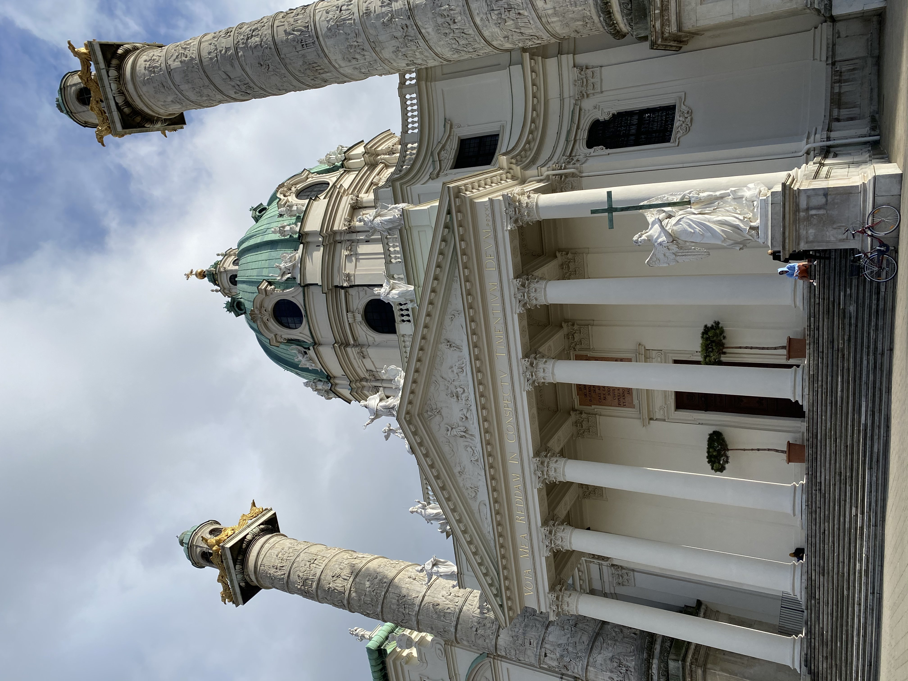

Travel - the best way to be lost and found all at the same time.
Hey, check out my video blog from Austria! Hope you'll enjoy it.
"When will you realize, Vienna waits for you" And it was like meeting an old friend after a long time. I felt so welcomed and cpmfortable. Thank you, Vienna.



One of the cities I will never forget in my life is defenitely New York. The city that never sleeps, the city of freedom and busy streets. The city I have dreams about and the city that will remain in my heart forever.